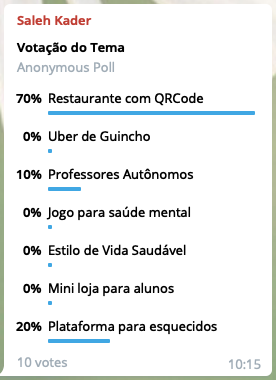

Design Sprint
Histórico de Revisão:
| Data | Versão | Descrição | Autor |
|---|---|---|---|
| 20/08/2019 | 0.1 | Criação do documento, adição dos tópicos | Pedro Rodrigues |
| 20/08/2019 | 0.2 | Adição no tópico 4 e colocação das três principais propostas | Pedro Rodrigues |
| 20/08/2019 | 0.3 | Adição do tópico 5 de decisão de tema e Adição do tópico de Artefatos | Pedro Rodrigues |
| 21/08/2019 | 0.4 | Adição no tópico 3 sobre 5W2H, Questionário e Protótipo. | Shayane Alcântara |
| 21/08/2019 | 0.5 | Adição do Richpicture Pedido no celular vs fila | Elias Bernardo |
| 22/08/2019 | 0.6 | Restruturação do tópico Artefatos(6) e algumas correções | Sara Silva |
| 22/08/2019 | 0.7 | Adição do protótipo de baixa fidelidade | Alan Lima |
| 22/08/2019 | 0.8 | Adição no topico 3 sobre Rich Picture e Brainstorm | Alan Lima |
| 22/08/2019 | 0.9 | Adição do restante do tópico 3, sobre artefatos construídos. | Shayane Alcântara |
| 22/08/2019 | 0.10 | Adição de Richpictures. | Pedro Rodrigues |
| 22/08/2019 | 0.11 | Adição de Richpictures. | Guilherme Marques |
1. Introdução
Há diversas técnicas que visam auxiliar no processo de criação de produtos. Uma delas é o Design Sprint. Ele é uma metodologia que visa reunir os participantes multidisciplinares da dinâmica em uma série de 5 dias para no fim ter uma ideia de um produto mais tangível. Para cumprir as etapas, o grupo produz diversos artefatos para auxiliar neste percurso.
2. Design Sprint
2.1 Unpack (Entenda)
Nesta etapa, o grupo reúne informações com o objetivo de entender a proposta, elaborar hipóteses e ideias. Além disso, ter um espaço definido e adequado é importante para manter as dinâmicas eficientes.
2.2 Sketch (Desenhe)
Nesta etapa, a equipe realiza esboços das ideias, como um "mapa do desafio" e as aprimora com o auxílio dos especialistas da empresa. É interesse que no espaço definido na etapa anterior tenha meios para facilitar estas ações.
2.3 Decide (Decida)
A partir das ideias apresentadas, esta etapa é responsável pela escolha da ideia mais adequada para a equipe. Comumente, é desenhado um storyboard como um pré-protótipo, a fim de visualizar os possíveis detalhes do plano escolhido.
2.4 Prototype (Prototipe)
Nesta etapa, é desenvolvido o protótipo baseado no storyboard da etapa anterior. É feito também um roteiro de entrevistas para preparação da validação com os potenciais clientes.
2.5 Validate (Valide)
Nesta etapa, é realizada a validação com os potenciais clientes com testes, por meio do protótipo criado na etapa anterior. Caso necessário, a ideia é aprimorada. Com essa etapa concluída, já é possível direcionar a equipe para ações mais concretas no desenvolvimento da ideia.
3. Artefatos Construídos
Brainstorm
Possui extrema importância para geração das idéias do projeto. Caracteriza-se por ser uma dinâmica de grupo que é capaz de juntar informações e estimular o pensamento criativo. Esta ferramenta, conhecida como "Tempestade de ideias", tem como dinâmica a interação entre os membros do projeto e suas exposições de ideias, auxiliando a criatividade pela grande quantidade de falas organizadas com um foco em comum: encontrar uma ideia que satisfaça as necessidades eficientemente. Seu objetivo é que os participantes possam chegar a um consenso de uma ideia viável no momento, cada um tendo seu espaço de fala e sobre opiniões variadas.
Rich Picture
Os diagramas têm uma característica muito importante quando falamos de praticidade e entender as necessidades do cliente: eles podem vir a serem fáceis de entender com o uso de figuras, atores e suas ações. Se preenchido com o cliente, é possível realizar diversos esboços com rapidez e com a facilidade de correção no mesmo momento. Desta forma, é possível deixar o fluxo de ações mais compreensível sem muito texto.
É responsável por ilustrar os principais elementos e relacionamentos que precisam ser considerados para implementação do plano. Consiste em imagens, texto, símbolos e ícones que são responsáveis por facilitar o entendimento da situação de uma forma simples e rápida.
5W2H
Este método auxilia na tomada de decisão sobre os principais elementos que orientarão a implementação do plano. Quando algo deve ser implantado, entram em cena as seguintes definições:
Definições:
- O que (What) deve ser feito?
- Por que (Why) deve ser implementado?
- Quem (Who) é o responsável pela ação?
- Onde (Where) deve ser executado?
- Quando (When) deve ser implementado?
- Como (How) deve ser conduzido?
- Quanto (How much) vai custar a implementação?
Entrevista
Esta ferramenta é comumente usada como forma de contato com o cliente interessado, em uma entrevista fechada, aberta ou mista. Com essa técnica, pode ser objetivado que o cliente explique seu trabalho, suas necessidades e o que mais o entrevistador necessita para auxiliar a modelar os requisitos. Para esta técnica ser bem sucedida, o entrevistador deve ser um bom ouvinte e saber mediar o encontro.
Questionário
De fundamental importância para o êxito de um projeto, o questionário vem como uma ferramenta para colher informações de um público alvo, com o objetivo de perceber necessidades e assim, propor soluções baseadas nas questões abordadas no questionário.
NFR
Este método busca satisfazer a modelagem de requisitos não funcionais. Os requisitos não funcionais são requisitos que especificam as características desejadas que um sistema deve fornecer, como características de qualidade, por exemplo. De acordo com Chung, o NFR Framework é uma abordagem orientada a processos, onde os requisitos não-funcionais são explícitamente representados como metas a serem obtidas”[CHUNG, 1995].
Storytelling
Como forma de complementar o brainstorm, podem-se citar a técnica de Storytelling. De acordo com um estudo feito por, a qualidade e o grau de detalhamento dos requisitos desenvolvidos, utilizando esta abordagem, foi muito maior do que os desenvolvidos usando abordagens tradicionais, tais como brainstorming. Logo, esta técnica permite que haja o detalhamento de necessidades bem detalhado, por meio da ação de "contar histórias".
Protótipo
A prototipagem auxilia no entendimento do potencial cliente em relação à solução proposta a ele. Ele é a ferramenta mais concreta antes da produção do produto, sendo possível realizar diversas correções e aprimoramentos para aumentar a qualidade.
4. Propostas de Tema
Neste tópico está contido todos os temas levantados pelo grupo, tendo eles como objetivo aplicar os padrões de Arquitetura e Desenho de software em um projeto real.
Os temas são bastante diversos e a maioria dos mesmos foi desenvolvido de forma individual, denotando um grupo bem heterogêneo, já que cada indivíduo expressa uma visão pessoal diferente sobre um assunto.
4.1 Professores autônomos
Situação Problema
Professores autônomos possuem dificuldade para gerenciar alunos ou fazem o controle de forma manual.
Solução
Um software que facilite a gerência de alunos e permita a adição de tarefas, dentre outras features. (Para professores do 6º ao 3º ano do ensino médio).
Principais funcionalidades
- Cadastro de alunos por professor (o professor se cadastra e posteriormente cadastra seus alunos na plataforma, fornecendo para eles os dados de login gerados);
- Grade horária;
- Inserção de atividades e compartilhamento colaborativo (um professor poderá acessar a atividade de outro desde que compartilhe as suas);
- Desempenho dos alunos;
- Cálculo financeiro;
Tecnologias e padrões
API: NodeJS (Express) Front: Vue
Criação: Singleton e Factory Method
Estruturais: Decorator, ...
Comportamentais:
- Command (Tarefas);
- Memento (Log de atividades / refazer tarefa);
- Observer (notificar alunos de tarefas);
4.2 Restaurante com QR code
Situação Problema
Restaurantes de Shoppings apresentam longas filas de esperas para fazerem seus pedidos, além da baixa comodidade do cliente de ter que sair da própria mesa para fazer ou pegar o próprio pedido.
Solução
Uma aplicação web que ficaria responsável por gerenciar os pedidos de um determinado shopping, onde as mesas da área de alimentação terão um QR Code, responsável por abrir a aplicação web e fornecer uma lista de restaurantes do shopping para o usuário.
Solução pela perspectiva de Usuário:
A intenção é que o usuário possa fazer o pedido na própria mesa, sem se preocupar em gerar filas para os restaurantes e mantendo a sua comodidade. Após o pedido o restaurante pode entregar o produto em sua mesa ou a aplicação web pode gerar uma senha para o próprio cliente ir buscá-lo no restaurante.
Solução pela perspectiva do Restaurante:
O restaurante poderá gerenciar os seus pedidos com uma facilidade maior. No seu sistema poderá conter um mapa com as mesas do shopping onde mandará uma notificação do local onde foi feito o pedido. Outra alternativa ao mapa é apenas uma notificação do número da mesa, facilitando o trabalho para o lojista. E também tem a opção do restaurante gerar uma senha e mandar para o cliente buscar o próprio pedido.
Possíveis Concorrentes:
Onyo - App de Pedidos em Praças de Alimentação: https://www.site.onyo.com/ Aplicativo apresenta alguns bugs. E tem um banco de restaurantes bem limitados, não sendo possível testá-lo.
Principais Funcionalidades:
Web do Restaurante:
- Cadastro e Login
- Integração com banco de dados de informações dos clientes
- Notificação de pedido do cliente
- Integração com o sistema de pagamento
- Mapa de mesas do restaurante
- Chat de comunicação com o cliente
Web do cliente:
- Cadastro e Login
- Tela com os restaurantes
- Tela com o cardápio dos restaurantes
- Chat de comunicação com o restaurante
- Integração com sistemas de pagamentos
- Perfil de usuário
4.3 Uber de guincho
Situação problema
Operadores independentes de guincho que apenas conseguem se comunicar com seu cliente por telefone, além de cobrarem por seus serviços a partir de um padrão ou estimativa ao invés do valor da viagem.
Solução
Um aplicativo que facilitasse a contratação desse tipo de serviço, onde o operador de guincho poderia registrar seu caminhão-guincho no aplicativo. Neste, o mesmo receberia notificações de serviço junto de informações como local, tipo de veículo a ser resgatado e problema registrado. O app faria então um cálculo sobre o preço do serviço prestado.
Possível concorrente
CadêGuincho: https://cadeguincho.com
- App não possui um mapa para mostragem da localização dos usuários;
- App tem outras opções, como posto de gasolina, reparo de baterias;
- Multi-funcional, mas não tão intuitivo como seria um aplicativo que desse foco na requisição de serviços.
Principais funcionalidades
App do motorista com
- Login, cadastro;
- Integração com banco de dados;
- Mapa para mostrar os locais de acidentes/problemas
- Notificações de um acidente/problema com as informações necessárias para se calcular o preço do serviço
- Serviço de chat, onde o motorista pode ver as informações de contato do cliente
- Integração com bancos e cartão de crédito
App do cliente com:
- Login, cadastro;
- Integração com banco de dados;
- Mapa para mostrar os motoristas que se encontram nas redondezas;
- Requerimento de serviço, onde o cliente deve inserir informações como tipo de carro, telefone, problema registrado e local;
- Possibilidade de chat e visualização de informações do motorista contratado;
- Integração com bancos e cartão de crédito.
5. Definição de Tema
Os temas anteriormente propostas sofreram críticas e elogios pelos membros do grupo e com isso um levantamento de pontos positivos e negativos a cerca de cada proposta.
5.1 Professores autônomos
Pontos Positivos
- Traz suporte para um nicho de mercado.
- Explora área de conhecimentos nova para o grupo.
- Permite a aplicação dos padrões de Desenho de Software.
Pontos Negativos
- Concorrência suficientemente expressiva.
- Exige adesão de um público retraido com tecnologias novas.
5.2 Restaurante com QR code
Pontos Positivos
- Inovador
- Explora área de conhecimentos nova para o grupo.
- Permite a aplicação dos padrões de Desenho de Software.
- Concorrência não expressiva
Pontos Negativos
- Exige pesquisa sobre questões legais
- Exige integração do sistema com o restaurante
5.3 Uber de guincho
Pontos Positivos
- Concorrência baixa
- Permite a aquisição de novos conhecimentos
- Preenche uma lacuna de mercado
Pontos Negativos
- Assunto não conhecido amplamente pela equipe
- Limita desenvolvimento exclusivo mobile
5.4 Votação e escolha do Tema
Após um período de debate entre o grupo, foi-se decidido que o tema seria escolhido a partir de uma votação pelo ferramenta Poll Telegram.
Resultado após votação:

- Como pode ser visto, o tema escolhido foi o Restaurante QRcode.
6. Artefatos
6.1 RichPicture
6.2 5W2H
6.3 Protótipos
6.4 Diagrama de Ishikawa
6.5 Estudo de Benchmarking
6.6 Questionário
6.7 Entrevistas
6.8 Storytelling
6.9 NFR
6.9 Brainstorming
7. Conclusão
8. Referências
Saiba Mais. The Design Sprint. Disponível em: https://www.gv.com/sprint/. Acesso em: 21 de agosto de 2019.
Chief of design. Design Sprint – O que é e para que serve o Design Sprint Google?. Disponível em: https://www.chiefofdesign.com.br/design-sprint/. Acesso em: 21 de agosto de 2019.
Translate Me. Design Sprint. Disponível em: https://translate-me.github.io/docs/def_tema/#2-design-sprint. Acesso em: 21 de agosto de 2019.
Sebrae. 5W2H. Disponível em: https://m.sebrae.com.br/Sebrae/Portal%20Sebrae/Anexos/5W2H.pdf. Acesso em: 21 de agosto de 2019.
Sebrae. Brainstorm. Disponível em: https://bibliotecas.sebrae.com.br/chronus/ARQUIVOS_CHRONUS/bds/bds.nsf/741A876FE828908203256E7C00614A23/$File/NT00002206.pdf. Acesso em: 22 de agosto de 2019.
BELL, Simon. How people use rich pictures to help them think and act. Disponível em: http://epubs.surrey.ac.uk/745796/1/How%20people%20use%20rich%20pictures%20to%20help%20them%20think%20and%20act%20~%20SPAR.pdf. Acesso em: 22 de agosto de 2019.
UNICAMP. Requisitos de Software. Disponível em: http://www.ic.unicamp.br/~ariadne/mc436/1s2013/modulo2.pdf. Acesso em 22 de agosto de 2019.
BRITO, Isabel. NFR Framework. Disponível em: http://jaejaneiro.orgfree.com/engsofnfr.pdf. Acesso em: 22 de agosto de 2019.
BARROS, Diamara. A UTILIZAÇÃO DE HISTÓRIAS EM QUADRINHOS NA ESPECIFICAÇÃO DE REQUISITOS DE SOFTWARE. Disponível em: http://repositorio.utfpr.edu.br/jspui/bitstream/1/3224/1/CP_PPGI_M_Barros%2C%20Diomara%20Martins%20Reigato_2017.pdf. Acesso em: 22 de agosto de 2019.